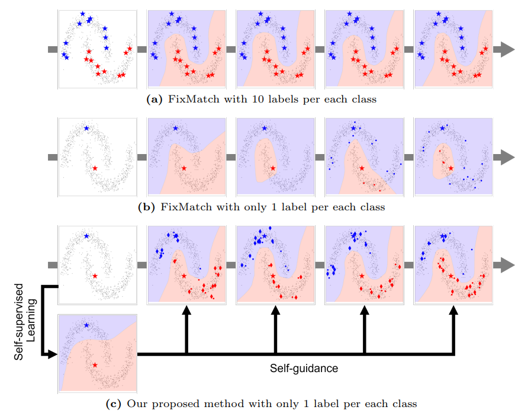
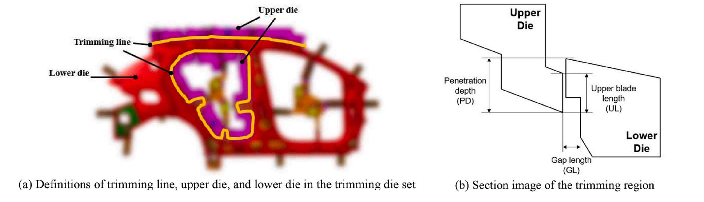

|
Jin-Seop Lee
Email / CV / Google Scholar / LinkedIn / Github |
{kind=link}
News
[2025-12] I will visit Nanyang Technological University (NTU) as a Visiting Scholar with
Prof. Albert Boyang Li
from Dec 2025 to Mar 2026. |
ResearchMy research interests include various tasks in computer vision, deep learning, and machine learning. I have been conducted research on data-efficient learning methods, including self-/semi-supervised learning, weakly-supervised learning, and domain generalization, etc. I am currently conducting research to improve the understanding and reasoning abilities of multi-modal large language models (MLLMs). Also, I am interested in multi-modal learning, video understanding, image/video synthesis, efficient AI systems, and streaming video LLMs. |

|
Learning to Refuse: Refusal-Aware Reinforcement Fine-Tuning for Hard-Irrelevant Queries in Video Temporal Grounding
Jin-Seop Lee*, SungJoon Lee*, SeongJun Jung, Boyang Li, Jee-Hyong Lee Preprint |
|
|
CountCluster: Training-Free Object Quantity Guidance with Cross-Attention Map Clustering for Text-to-Image Generation
Joohyeon Lee, Jin-Seop Lee, Jee-Hyong Lee Preprint |

|
BD-Net: Has depth-wise convolution ever been applied in Binary Neural Networks?
DoYoung Kim, Jin-Seop Lee, Noo-ri Kim, SungJoon Lee, Jee-Hyong Lee AAAI, 2026 |

|
TAG: A Simple Yet Effective Temporal-Aware Approach for Zero-Shot Video Temporal Grounding
Jin-Seop Lee*, Sungjoon Lee*, Jaehan Ahn, Yunseok Choi, Jee-Hyong Lee BMVC, 2025 TAG effectively captures the temporal context of videos and addresses distorted similarity distributions without training. |
|
|
Stabilizing Open-Set Test-Time Adaptation via Primary-Auxiliary Filtering and Knowledge-Integrated Prediction
Byung-Joon Lee, Jin-Seop Lee, Jee-Hyong Lee BMVC, 2025 OSTTA employs an auxiliary filter to validate data and calibrates the outputs of the adapting model, EMA model, and source model to integrate their complementary knowledge. |
|
|
DCG-SQL: Enhancing In-Context Learning for Text-to-SQL with Deep Contextual Schema Link Graph
Jihyung Lee*, Jin-Seop Lee*, Jaehoon Lee, YunSeok Choi, Jee-Hyong Lee ACL, 2025 DCG-SQL improves text-to-SQL generation by incorporating a deep contextual schema link graph that captures key elements and semantic relationships between the question and database schema. |
|
|
DomCLP: Domain-wise Contrastive Learning with Prototype Mixup for Unsupervised Domain Generalization
Jin-Seop Lee, Noo-ri Kim, Jee-Hyong Lee AAAI, 2025 DomCLP enhances generalization to unseen domains by combining domain-aware contrastive learning with prototype mixup to learn robust and domain-invariant features. |
|
|
Feature-level and Spatial-level Activation Expansion for Weakly-Supervised Semantic Segmentation
Junsu Choi*, Jin-Seop Lee*, Noo-ri Kim, SuHyun Yoon, Jee-Hyong Lee WACV, 2025 FSAE improves weakly-supervised segmentation by expanding Class Activation Maps along feature and spatial dimensions to better capture full object regions. |
|
|
IGNORE: Information Gap-based False Negative Loss Rejection for Single Positive Multi-Label Learning
Gyeong Ryeol Song, Noo-ri Kim, Jin-Seop Lee, Jee-Hyong Lee ECCV, 2024 IGNORE identifies and filters hidden positive labels using information gaps from pseudo masks to reduce false negatives in single-positive multi-label learning. |
|

|
ExMatch: Semi-Supervised Learning with Scarce Labeled Samples with Additional Exploitation of Unlabeled Samples
Noo-ri Kim, Jin-Seop Lee, Jee-Hyong Lee ECCV, 2024 ExMatch boosts semi-supervised learning with extremely limited labels by selectively leveraging confident unlabeled samples for self-training. |
|
|
Learning with Structural Labels in Learning with Noisy Labels
Noo-ri Kim*, Jin-Seop Lee*, Jee-Hyong Lee CVPR, 2024 LSL improves noisy label learning by incorporating structural information from data distribution to prevent overfitting to incorrect labels. |
|

|
Automation of Trimming Die Design Inspection by Zigzag Process Between AI and CAD Domains
Jin-Seop Lee*, Tae-Hyun Kim*, Sang-Hwan Jeon, Sung-Hyun Park, Sang-Hi Kim, Eun-Ho Lee, Jee-Hyong Lee EAAI(Engineering Applications of Artificial Intelligence), 2024, TOP 3%, IF 8.0 Our zigzag process automates trimming die inspection through alternating AI and CAD collaboration, achieving high accuracy and significantly reduced inspection time. |

|
Automatic defect classification using semi-supervised learning with defect localization
Yusung Kim, Jin-Seop Lee, Jee-Hyong Lee IEEE Transactions on Semiconductor Manufacturing, 2023 Our method achieves robust defect classification in semiconductor manufacturing by combining localization-guided detection with semi-supervised learning. |
Education
|
Honors
|
|
Design and source code from Jon Barron's website. |